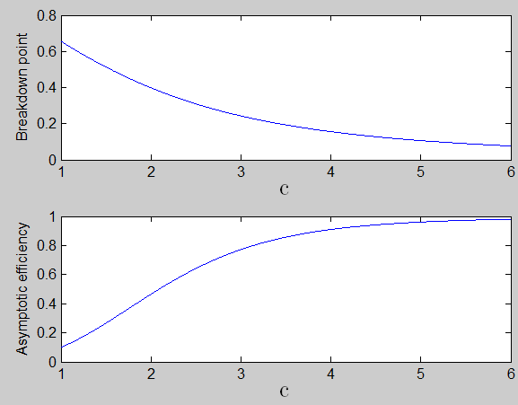

| Flexible Statistics Data Analysis Toolbox™ |
|
| Provide feedback on FSDA toolbox |
Compute breakdown point and asymptotic efficiency of c coefficient for Tukey biweght function for Tukey biweight.
c is present inside ρ function as follows

bdp = TBc(c)
[bdp,eff] = TBc(c)
bdp = TBc(c) computes the breakdown point for the values specified in scalar or vector c.
[bdp,eff] = TBc(c) computes breakdown point and asymptotic efficiency for the values specified in scalar or vector c.
c=1:0.01:6;
[bdp,eff]=TBc(c,1);
subplot(2,1,1)
plot(c,bdp)
xlabel('c','Interpreter','Latex','FontSize',16)
ylabel('Breakdown point','Interpreter','none')
subplot(2,1,2)
plot(c,eff)
xlabel('c','Interpreter','Latex','FontSize',16)
ylabel('Asymptotic efficiency','Interpreter','none')

| Provide feedback on FSDA toolbox |
|
|
tbbdp.html | tbeff.html |
|